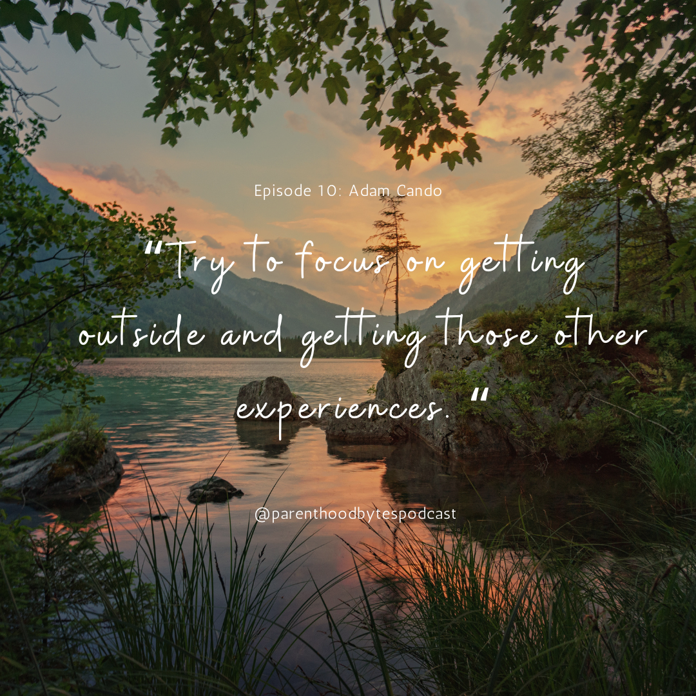

Episode 10: Adam Cando

Episode Notes
In this episode, we engage in a captivating conversation with Adam Cando, a seasoned software engineering manager at Loyal, with over 13 years of experience in the tech industry, and is currently raising a 4-year-old.
Adam reflects on the advantageous aspects of a tech career, emphasizing the flexibility it affords, including accommodating work hours and the ability to be present for his child whenever necessary. A unique aspect of his parenting approach is highlighted as he discusses the practice of gifting experiences rather than physical items to his daughter. He shares how this strategy has accelerated her learning and development, setting her on a unique path compared to her peers. Adam encourages parents to incorporate their passions into their children's upbringing, creating a more enriching and fulfilling family dynamic.
Tune in to this episode for a blend of professional wisdom and parenting insights, as Adam shares his experiences, offering valuable tips for those navigating the intersection of a demanding tech career and the joys of parenthood.